Archived
The following series of GeoNetwork are no longer in active use and you are encouraged to migrate to a newer version.
The GeoNetwork community is not large enough to maintain many active branches of GeoNetwork at one time. Older installations of GeoNetwork may be subject to disclosed security vulnerabilities resulting in our recommendation to update to the supported stable or maintenance series.
Volunteers wishing to backport security fixes to older versions of GeoNetwork are welcome to do so. Commercial support providers are welcome to do so on behalf of their customers.
4.0.x
Version 4.0.0-alpha.1
Why 4.0.0-alpha.1?
GeoNetwork 4.0.0-alpha.1 release is an alpha version of GeoNetwork using Elasticsearch as search engine (instead of the previous home made search based on Lucene). This version is a beta release made available for users who would like to test it.
This version provides support of GeoNetwork main functionalities and user can search, edit records and manage the catalogue as usual. Only the searches (and all related protocols) are affected by the search engine change and the user search experience has been improved with the following:
Some of the main goals of moving from Lucene to Elasticsearch are:
- Be able to share index across catalogs (clustering)
- Improve search experience (see below)
- Improve performances for searches and indexing
- Add dashboards with Kibana
- Simplify code base
What's new?
This release is all about user search experience:
- Autocomplete support phrase query, does not return private terms, takes current search into account
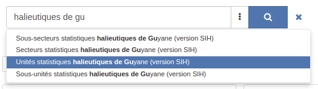
- Facets / OR query support
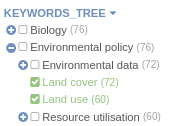
- Facets / Negative query support
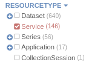
- Facets / Nested aggregations support
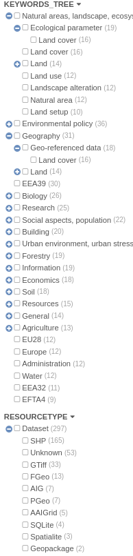
- Facets / Paging to collect more values
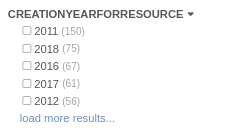
- Facets / Histograms
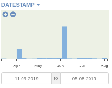
- Facets / Configuration from the admin > Settings > UI based on Elasticsearch API
- Record view / More like this ...
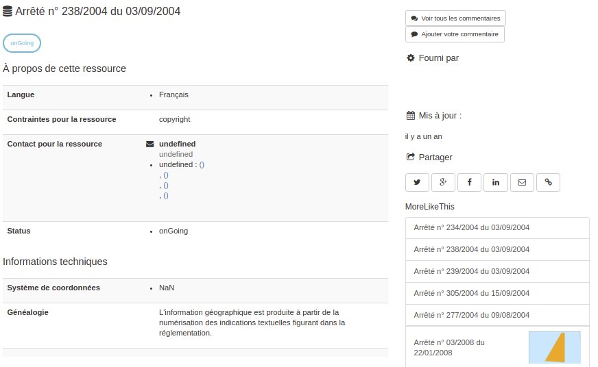
- Search / Custom scoring function
- Search / Range field support eg. temporal coverage
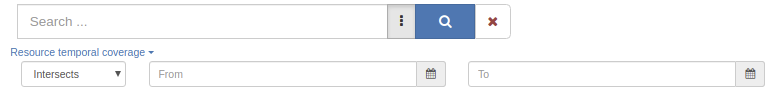
- Performances improved for search and indexing
- Build your own dashboards to analyze content, improve quality, create data visualization in Kibana
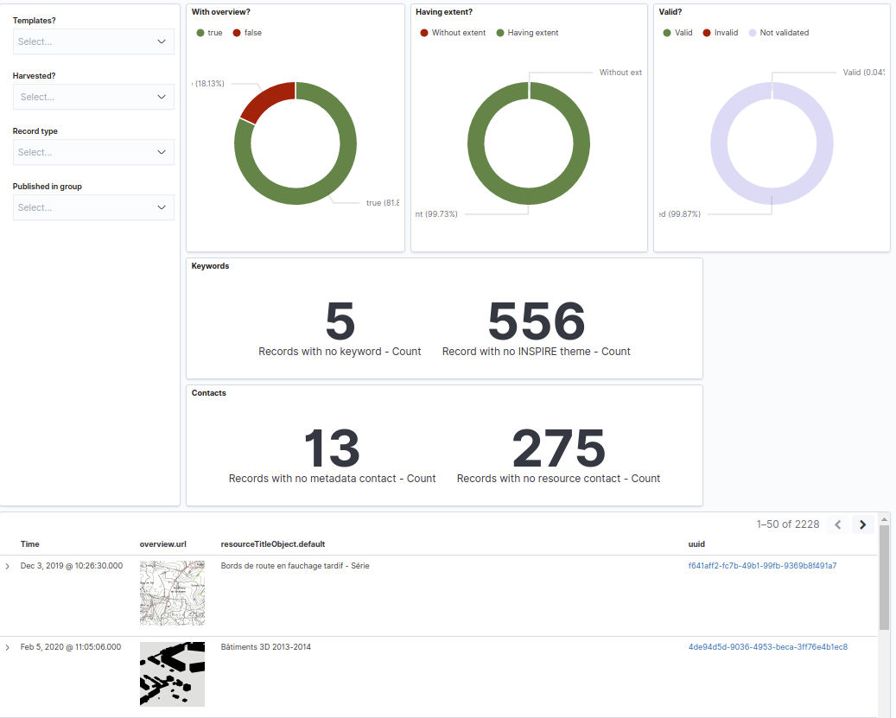
- Summary of indexing errors
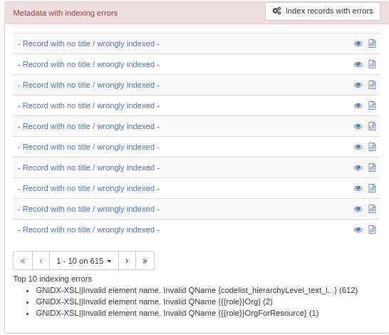
Regarding search protocols, only CSW has been migrated for now (ie. OAI-PMH, RDF, Z39.50/SRU, OpenSearch, ... are not available in this version). This means that a GeoNetwork 3.x can only harvest GeoNetwork 3.99 using CSW.
More details can be found in https://github.com/geonetwork/core-geonetwork/pull/2830.
For the installation check installation.
For reporting any issues go to https://github.com/geonetwork/core-geonetwork/issues.
Some features now removed
- CSW / Virtual CSW is replaced by sub-portal (see portal-configuration)
- CSW / results_with_summary custom GeoNetwork output schema is removed. To retrieve facets use the main search API.
- Deprecated Jeeves services removed (ie. services not used by Angular application like harvester config). Use the swagger API instead (see geonetwork-api).
- Metadata notifier manager (can be replaced by event system)
- Overrides mechanism of configuration file
What is next?
This version is a beta version and needs testing and feedback from the community. As a roadmap for version 4, we have to find resources to move forward on the following topics:
Existing features not implemented
- Transifex / Support multiple branches translation
- Multilingual metadata / Records are indexed and displayed but no logic to display depending on user interface language or search on specific language

- Indexing / Language specific analyzer (draft configuration made for French)
- Indexing / Spatial / Support for bounding polygons
- User interface / Search / Advanced search form
- User interface / Search / Active filters
- User interface / Search / Facet as tab
- Search / Other protocols (ie. OAI-PMH, RDF, Z39.50/SRU, OpenSearch)
- API / DirectoryUtils.search
- API / ReportUploads
- API / INSPIRE Atom Harvester
- Search / Statistics and search stat dashboards
New features to develop
- Search on records and WFS features
- Search / Synonyms supports
- Associated records / Use of multiple search API for better performance or Join query.
- Harvester / GN4 protocol
- Clustering
- Large catalogs / Better support of batch operations (eg. privileges, new owner, validation) and large selection
- Large catalogs / Define strategy to speed up search and not use track_total_hits
- Security / Elasticsearch and Kibana configuration (for now, do not expose Elasticsearch to the internet)
- Java 11 support
future versions of Elasticsearch will require Java 11;
your Java version from [/usr/lib/jvm/java-8-openjdk-amd64/jre]
does not meet this requirement
Version 4.0.0-alpha.2
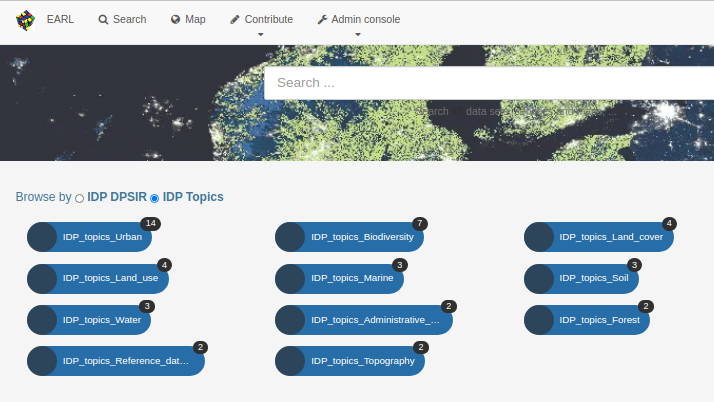
- Improved search eg. Full text search can now make exact phrase match using "version 17", base query can now be customized, score configuration, advanced querying using q(-status:obsolete)
- Add more like this configuration
- Aggregation can now use histogram
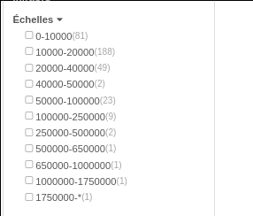
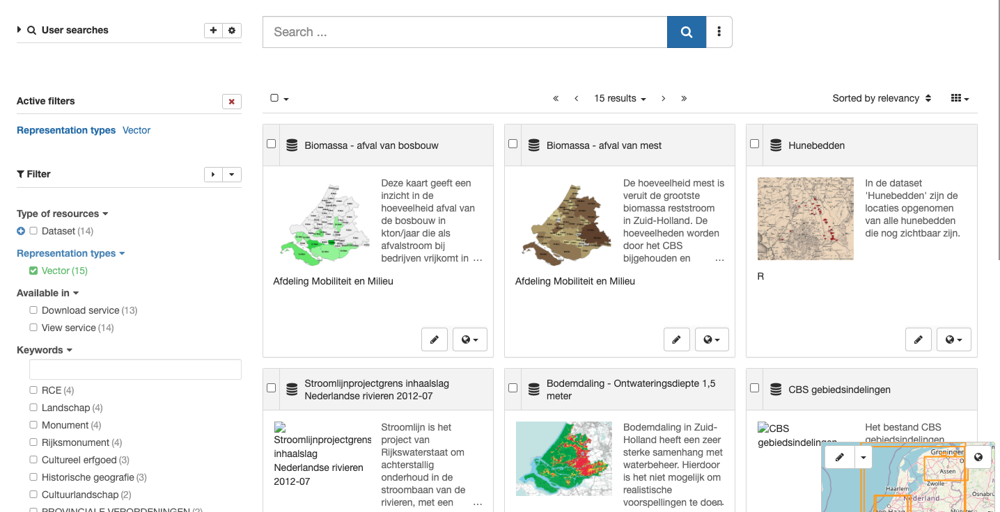
- Active filter is enabled by default and now support negative filter with better translations. Facet values can also be filtered.
- Associated resources / Remote record support
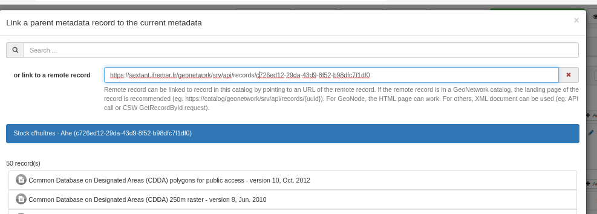
- Security update: Spring 5, JPA 2, Quartz, MySQL, Guava
- OpenAPI support
- Translation API to override default translations.
and more ... see 4.0.0-alpha.2 issues and pull requests for full details.
Version 4.0.0
GeoNetwork 4.0.0 release is the first version of GeoNetwork using Elasticsearch as search engine!
By moving from Lucene to Elasticsearch GeoNetwork 4.0.0 offers:
- shared index across catalogs (clustering)
- Improved search experience
- Improved performance for searching and indexing
- Opportunity to add dashboards with Kibana
- Simplify the geonetwork codebase
The Elasticsearch engine supports GeoNetwork core functionality: user can search, edit records and manage the catalogue as usual. Only the searches (and all related protocols) are affected by the change to Elasticsearch. The editor and admin application remains the same.
There remains opportunities to help:
- A number of features that you enjoy in GeoNetwork 3 may not yet be available.
- Multilingual editing is the same, but multilingual search is not yet fully operational.
- Read carefully the list of missing features before migrating.
Before you start:
- Installing the application require to install an Elasticsearch instance (see installing-index).
Release highlights:
-
The GeoNetwork [4.0.0]{.title-ref} release is aligned with GeoNetwork 3.10.4 (see version-3104).
-
The user search experience has been greatly improved.
For more infromation see the description in version-400-alpha1
{.interpreted-text role="ref"} andversion-400-alpha2. -
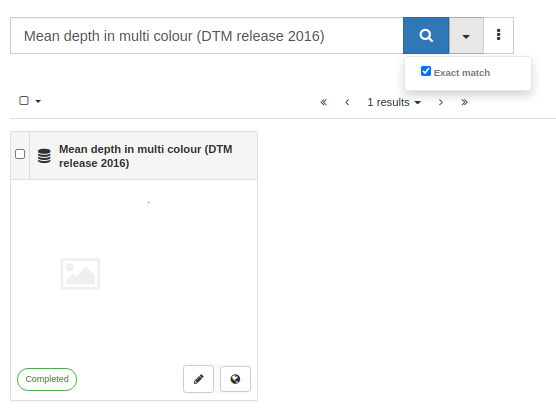
-
Record view / Use timeline to render resource events, temporal extent and vertical extent
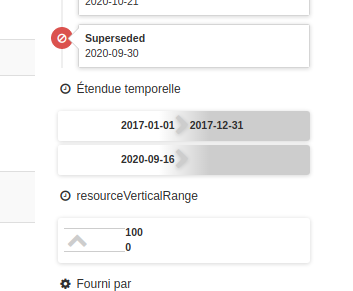
See 4.0.0 issues and pull requests for full details.
Version 4.0.1
GeoNetwork 4.0.1 release is a minor release aligned with GeoNetwork 3.10.5 (see version-3105) with some changes:
- Search / Facet / Fix more action when collapse state is set
- Search / Suggestion / Apply score
- INSPIRE / Add conformance class 2b for monitoring
- Record view / Fix extent image due to HTTPs change
- Record view / More like this improvement
- DOI / Stored as resource identifier instead of online resource
- Map / Improvements
- WFS feature harvester scheduler and QGIS server support
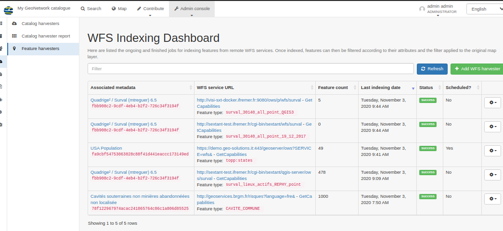
- Indexing / Fix usage of custom indexing name
- ISO19115-3 / ISO19139 conversion / Fix for multiple individuals in organization
- CSW / Restore possibility to query any index fields
and more ... see 4.0.1 issues and pull requests for full details.
Version 4.0.2
GeoNetwork 4.0.2 release is a minor release but adds a better multilingual support which may require some changes in your installations:
Database migration
With the possibility to restore deleted record, catalog maintainer has to update the database with the following migration SQL script.
Index migration
Index migration is only required if you created custom facets configuration in the admin or created custom Kibana dashboards. Changes are related to name or structure changes in index fields due to the improvement made for multilingual record support. The changes affect the following type of fields:
Codelist
t_ is now l_ and is an object composed of:
So et was:
codelist_characterSet: [
"utf8"
],
codelist_characterSet_text: [
"UTF8"
],
codelist_characterSet_text_langeng: [
"UTF8"
],
and is now:
cl_characterSet: [{
key: "utf8",
default: "UTF8",
langeng: "UTF8",
link: "http://standards.iso.org/iso/19139/resources/gmxCodelists.xml#MD_CharacterSetCode"
}]
So if using xt in a facet, use [cl_characterSet.default]{.title-ref} with this new version.
Thesaurus
The ds field is now only used for rendering (not for query) to limit the total number of field and avoid some errors on large catalogues.
Use the per thesaurus fields which were named [thesaurus_geonetwork+external/local+type+thesaurusid]{.title-ref} and are now id. The field is also an object composed of:
thesaurus_geonetworkthesaurusexternalthemeeeatopics: [
"Land use",
"http://www.eea.europa.eu/portal_vocabularies/themes/landuse",
"Biodiversity - Ecosystems",
"http://www.eea.europa.eu/portal_vocabularies/themes/biodiversity"
],
and is now:
th_eea-topics: [{
default: "Biodiversity - Ecosystems",
langeng: "Biodiversity - Ecosystems",
link: "http://www.eea.europa.eu/portal_vocabularies/themes/biodiversity"
},
{
default: "Policy instruments",
langeng: "Policy instruments",
link: "http://www.eea.europa.eu/portal_vocabularies/themes/policy"
}
Topic category
ic is renamed to ic and has the same structure as a codelist.
GeoTag
ag is now stored in the template field for keyword types ie. [keywordType-place]{.title-ref}
For more details check configuring-search-fields{.interpreted-text role="ref"} andconfiguring-faceted-search.
Main changes in version 4.0.2
- Multilingual support
- Thesaurus / Import from Linked Data Registry
- WFS indexing / More robust and add QGIS Server support
- User searches / Add portals with filter in the list
- Index / improvements
and more ... see 4.0.2 issues and pull requests for full details.
Version 4.0.3
GeoNetwork 4.0.3 release is a minor release with some changes:
- Interactive graphics for facets (See configuring-facet-graphics)
- Map / WPS support improvements
- Indexing / Improvements, better multilingual support and more robust
- Monitoring your catalogue usage using Kibana
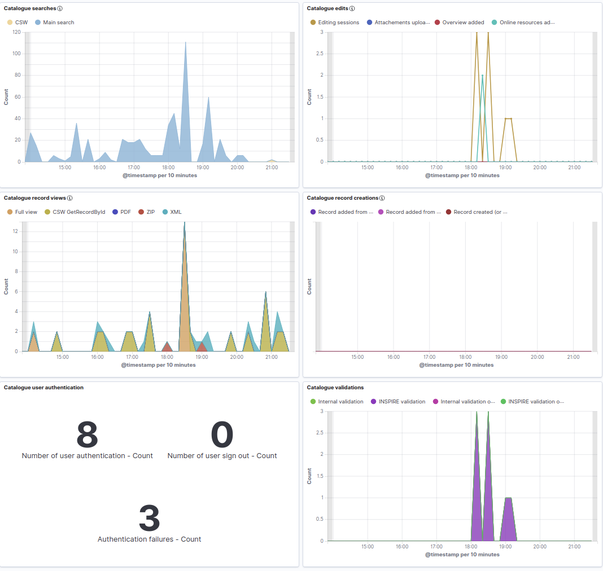
- Translation pack builder for faster initialization of the client application.
and more ... see 4.0.3 issues and pull requests for full details.
Version 4.0.3 is also the version to use if testing the draft OGC API Records service.
Version 4.0.4
GeoNetwork 4.0.4 release is a minor release with some changes:
- Search results / Improve performance with overview as dataURL
- Editor / List format as protocols
- Editor / Fix compute extents from keywords
- Filestore / Jcloud implementation
- INSPIRE / Validation / Remove internal schematron. Use INSPIRE validator instead.
- DOI / Improve Datacite conversion
- Security / Password enforcement
- Index health check improvements
- Add proxy for microservice eg. OGC API Records
and more ... see 4.0.4 issues and pull requests for full details.
Version 4.0.5
GeoNetwork 4.0.5 release is a minor release with some changes:
- Harvester / Add visual summary
- DOI / Update support and manage existing DOI from editor (see doi)
- DOI / Schematron validation to make DataCite XSD error reporting more comprehensive
- Permalink to editor using a specific view or by UUID
and more ... see 4.0.5 issues and pull requests for full details.
Version 4.0.6
This new release of GeoNetwork contains a lot of improvements and fixes made during the past 8 months that should make it much more easy to use and customizable. This version also benefited from most of the fixes and improvements made for the GeoNetwork 3.10 and 12 versions during the past months.
Highlights
- Fix for the log4shell CVE
- A new flexible JSON harvester which currently supports CKAN, ODS and ESRI
- Restyled topics and categories in the homepage
- Better UI for the harvester administration
- The possibility to put the search map in the facets column
- Improvements to the search experience and facets
- Improvements to the INSPIRE Atom feed
- Improvements to the DOI creation process
- Improvements to the Editor UI and Admin UI
Security
- Bump log4j2 from 2.17.0 to 2.17.1 (#6110)
- Update log4j2 from 2.16.0 to 2.17.0 to address CVE-2021-45105 (#6083)
- Bump log4j-core and log4j-api from 2.15.0 to 2.16.0 (#6079)
- Update log4j2 from from 2.7 to 2.15.0 (#6075)
Features and improvements
- Display the alert message within the online resource popup (#6109)
- Updated keycloak to use the correct granted authority (#6134)
- DOI - add identifier / online resource url using the DOI proxy url (#6124)
- CSW Harvester / add typeahead support for filter field names (#5796)
- Sort groups and users in transfer ownership (#6093)
- Metadata update and internal reports updates (#6082)
- Service record for CSW capabilities - INSPIRE improvements (#6081)
- Update UI configuration selected by default: select the current node if defined in the configuration, otherwise the first one (#6094)
- Don't allow to delete a group if it owns metadata (#6072)
- Confirmation dialog to delete an UI configuration (#6092)
- Replace Travis badge by Github Actions Badge (#6097)
- Enable to display map in left column of search UI (#6080)
- Add maven caching to GraphQL analysis (#6085)
- Editor / Error message fixes (#6029)
- Add the doi-get query for ISO19115-3.2018 standard (#6065)
- Add proxy level security support for map services (#5941)
- INSPIRE Atom feed / Update retrieve dataset UUID to handle multiple atom feed entries for the same dataset (#6078)
- Metadata get status service - return the status change date for all types of statuses (#6074)
- User custom dialog to ask for users / groups delete confirmation (#6070)
- Add a confirm popup when deleting a logo (#6067)
- Misc. updates to Dutch translations
- Upgrade jsoup library (#6057)
- Update label texts for workflow dialog / actions. Fixes #4992 (#5840)
- Opendata harvesting / add a resource for the landing page (#6062)
- Configuration option to restrict the usage of non-predefined map services in the Regions API. Related to #5166 (#6045)
- Change the forgot password message (#6015)
- Don't display the delete button when creating a new group (#6040)
- Don't display the reset password button when creating a new user (#6041)
- Use the Map projection Region API setting in Regions/geometry related services (#6050)
- Metadata status migration - add FK for relatedMetadataStatusId (#6010)
- Encode view parameter in URL (#6030)
- Uses Java 8 in the code analysis
- Add support for UI settings migrations. Migration for mods.header.isMenubarAccessible (#6044)
- Enable CodeQL analysis in CI workflow
- Add mimetype in WWW:DOWNLOAD protocol on OpenDataSoft harvesting (#6043)
- Metadata retired status support (#5943)
- Allow to reset the users / groups filters (#6042)
- Datacite formatter - process for creators only point of contacts with roles pointOfContact and custodian (#6039)
- Map viewer / support to add layers from ESRI Rest services (#5931)
- JSON Harvester / Improve ESRI and OpenDataSoft harvesting (#6023)
- option for duplicate API to copy attachments or not (#6009)
- Added MetadataPreRemove event before backup operation (#5954)
- Remove username from forgot password service url (#5993)
- Unblock missing user/group information from user profile (#6005)
- Update XslProcessApi to process the draft copies for the metadata in a workflow (#5811)
- Add statusIds list to MetadataWorkflowApi.getStatusByType API (#5984)
- i18n / Add custom translations to the default language packages (#5919)
- Configure how to extract the WMS layer name from metadata online resources to add them to the map viewer (#5987)
- Validation / INSPIRE / Return message when quota exceeded. (#5995)
- Add index folder information in the catalog information table (admin
- statistics and status) (#5976)
- Add logic to only run encryptor once on password during the migration. (#5865)
- Used nv-i18n library to add better support for iso639-2/T iso639-2/B support (#5982)
- Update iso19139 template for uuidref attribute to apply only for srv:operatesOn element (#5924)
- INSPIRE Atom feed / Process data feed download links with multiple download files/links per datafeed entry (#5985)
- ISO19115-3 - jsonld formatter - support online resources multilingual for name and description (#5989)
- ISO19139 - jsonld formatter - support online resources multilingual for name and description (#5955)
- Add a split button for
Validatein the 'edit' toolbar so the label is always displayed (whether the submenu is there or not). (#5966) - Add a new Json harvester (#5942)
- Remove secure port setting (#5569)
- Avoid loading Recaptcha API by angular-recaptcha if Recaptcha is disabled in the settings (#5562)
- Small UI improvements for the Harvester Settings page (#5926)
- Display topic categories tooltip in the metadata editor when tooltips are enabled (#5935)
- Editor / ISO / Compute extent from one keyword or add one extent from all keywords (#5917)
- Record view / ISO / Temporal range details support. (#5918)
- Homepage / Add a title to info block (#5922)
- Map list / Open map in the viewer, not the record view (#5921)
- Add localizedException logic so that errors can be displayed in multiple languages (#5323)
- Search / Facet / Remove count if undefined (#5915)
- Search / Add search options (eg. titleonly) to permalink (#5914)
- Record status / Highlight superseded record like obsolete one. (#5898)
- Formatter / Admin API / Migrate to Spring. (#5905)
- Update search options of the editor (harmonisation of the search functions between search page and editor) (#5907)
- Search / Active filter / Misc improvements. (#5903)
- INSPIRE / Validation from a portal endpoint. (#5899)
- Data / WFS harvester / Don't diplay widget if WFS is down (#5898)
- Admin / Reports / Consistent CSV format with other exports. (#5897)
- Resources / Load using relative path. (#5902)
- Only extractTitles for type METADATA (#5892)
- Small UI improvements to the (advanced) search on the search page (#5877)
- Record view / Preserve debug mode in links (#5894)
- Dublin core / Improvements (#5893)
- Editor / ISO topic category / Return list corresponding to schema plugins. (#5887)
- Editor / Avoid error if records contains multiple all thesaurus block (#5885)
- Editor board / Validation filter translations. (#5884)
- Break words in table on the record view page (#5879)
- Plugin / SchemaLocation is removed on save in ISO19139 (not in other plugins). (#5878)
- Record view / More like this improvements. (#5858)
- Record view / Add conditional formatter support (#5820)
- Facet / Translation / Distinction between zip code and ZIP format (#5876)
- MetadataManager / Add utility to check if record is valid. (5875)
- Setting / Integer / Get with default value. (#5874)
- Editor / Associated resource / Check null protocol or url (#5880)
- Home page / Facet / Add CSS class (#5869)
- GML / Add required id attribute to TimePeriod (#5867)
- Restyle the logo list in the Settings (#5855)
- Refactor sql to use binding (#5868)
- Facet / Add translation sort and filtering support. (#5852)
- CSW / Restore possibility to store by any index fields (#5849)
- Map / Service list / Add UI configuration filter if any (#5854)
- ISO19139 / Formatter / Support isoType in template match for plugins (#5853)
- Remove deleteAllByMetadataIdExceptGroupId from custom implementation and use the repository \@query instead. (#5828)
- Small adjustments to UI settings in the Admin (#5839)
- Restyle topics on the Home page (#5837)
- Escape login redirect url (#5829)
- Add a Bootstrap layout and column to a static page (#5843)
- Aggregation / Add terms script support (#5745)
- Editor / Associated resources / Do not add wildcard on all search (#5792)
- Admin / Tools / Add action to drop data index. (#5812)
- Add exact match and title only search options (#5783)
- Add copy resource interface, implement cmis resource copy with additional properties (#5776)
- Make the editor menu scrollable on small screens (#5795)
- User Profile Readonly for keycloak users (#5769)
- Add confirm to delete Category and Cancel edits to metadata (#5813)
- Editor / Online source / Check URL with a HEAD call (#5741)
- Map / Apply filter to layer search (#5803)
- iso19139 full view - codelist elements - display the codelistValue translation only if the element has a text also (#5793)
- Add a scrollbar to the privileges popup when group names are too long (#5799)
- Display the facet filter on a single row (#5762)
- History / Display close task only when it applies (#5786)
- Revise security policy with example of email list and issue tracker as public forums (#5754)
- Update instructions for local development (#5627)
- Search / Add all title's translations in the default search (#5750)
- Indexing / Temporal extent / Add support for now in range upper bound. (#5784)
- Add new styling options to display the status of metadata records (#5759)
- Move release build properties to separate file (#5348)
- Add
registerandlost passwordoption to accessible login menu (#5571) - Styling and multiple columns for the language list in the
Create Thesaurus Window(#5572) - Add a new accessible menubar (clickable and keyboard accessible): (#5518)
- Modify spring security so that it can be set at runtime startup (#5312)
- Add salutation to notification message. (#5686)
- Refactor - autowire settingManager bean to make code cleaner. (#5773)
- Editor / option to disable OGC Capabilities layer processing in the online resource panel. (#5763)
Fixes
- Use typeNames in the WFS URL when version is >= "2.0.0" (#6143)
- URL rewrite / Make "/geonetwork?uuid=..." links work again (#6139)
- Fix the cron expression for the INSPIRE ATOM harvester (#6131)
- Fix issue with CMIS connection during startup (#6106)
- Fix removal of sort by and hits per page elements in the UI configuration (#6091)
- Fix to display the role translation instead of the role code in the iso19139 full view formatter (#6123)
- XSLT formatter / remove debug mode (#6127)
- Fix default URL for the metadata full view (#6125)
- Metadata view / correctly escape quotes in links title to avoid runtime error (#6095)
- Fix for the height of a Modal popup in the Editor (#6098)
- Fix check for layer already in map - case insensitive check of the url (#6090)
- Fix coordinate order in jsonld GeoShape element (#6071)
- Add styles and classes to fix the button bars not really fitting inside the headers on admin pages (#6061)
- Fix the registration of the
surnameandcountryfor the 'self' registration process (#6060) - Fix the list of elements to process in CSW ElementSet strategy 'context' (#6017)
- Fix the display of the service metadata title for CSW and portals (#6026)
- Fix check for layer already in map (#6031)
- Fix feedback email with multiple recipients (#6033)
- Fixed issue with missing keycloakSecurityContextRequestFilter that was causing keycloak not to refresh the token correctly. (#6035)
- DOI creation / Change the links to buttons so that they become actually disabled when clicked (#6037)
- Convert iso639_2T to iso639_2B language codes in form-builder (#6024)
- Reset search parameter after metadata status change to "approved" (#5970)
- Fix gn-fn-index:is-isoDate - invalid dates like 2021-04-207 match, causing indexing errors (#6022)
- Fix credentials autocomplete in harvesters (#6011)
- Admin / better handle harvester types translation (#6006)
- Add missing 3.12.x upgrade steps (#5866)
- Admin / Users / Fix the users that a UserAdmin can manage (#5886)
- Validation / INSPIRE / Fix when setting is 'null' (#5973)
- Fix a bug when the url doesn't contain the ? sign (#5994)
- Fixes some challenges in google-structured-data-test (#5988)
- Remove duplicated dependency (#5986)
- Updated default language so that is comes from common java location. (#5981)
- INSPIRE / Validation / Add API Key. (#5975)
- Fix workflow mail notifications for metadata with a working copy (#5971)
- Small fix for long titles on Topic blocks (#5960)
- Editor / Avoid hiding part of the Add Resource dropdown in sidebar. (#5916)
- External viewer / Fix error when adding layer (#5959)
- Rollback exceptions handled in GlobalExceptionController. Fixes #5944 (#5948)
- Remove online resource - fix resource name comparison (#5934)
- Fix CSW ES mapping for sortBy and bbox (#5927)
- Handle CSW BBOX Filter correctly (#5913)
- Encryptor env variable should be uppercase as this it the general standard otherwise it will not find the variable on unix (#5873)
- Fix issue with localized exception where with* functions were returning LocalizedException instead of the class. i.e. ResourceNotFoundException (#5531)
- API / Avoid browser cache issue when the same API Path serving various formats. (#5901)
- ISO19139 / CRS indexing fails on multilingual records (#5900)
- HTML / Page tab title empty (#5895)
- Record view / Refactor getFormatterForRecord / Fix default url
- Record view / Fix display of topic category. (#5891)
- Search results / PDF / Missing title in TOC (#5888)
- Fit view to exact extent (fixes issue #5791) (#5847)
- Fix ops for public metadata inserted with CSW-T (#5202)
- Record view / Fix display of CRS label. (#5883)
- Record view / Group not set in prod mode (#5851)
- Fix empty metadata list with -1 count in user profile. Fixes #5871. (#5872)
- Encryption / Application fails to start if encryption error on harvester passwords (#5859)
- Admin / Status / Fix facet more (#5848)
- Record view / Advanced / Fix search by keyword links (#5832)
- Indexing / documentStandard is not an array. (#5834)
- Indexing / Do not add twice indexingDate field (#5823)
- User \$translateProvider.useSanitizeValueStrategy('escapeParameters') for encoding sanitizing (#5461)
- Fix for validation result gets lost when approving record and copy validation results when creating a draft. Fixes #5209 (#5418)
- Overview / Removal / Do not delete attachment from other records (#5821)
- INSPIRE Atom feed xslt fix for resource constraints with multiple gmd:otherConstraints elements (#5815)
- Index / Avoid error on multiple results in DQ conformance. (#5814)
- Correct the OpenAPI document so that it does not generate errors that were identified in #5431 (#5809)
- Fix Thumbnail generator (#5757)
- OpenAPI / Restore missing method. (#5752)
- Locale loader: fix to load translation files using the format
relativepath|type, like../../catalog/views/myview/locales/|core(#5710) - Search results - metadata with a working copy display a label 'Working copy' if the metadata has a draft copy, even for public users. Fixes #5580 (#5805)
- Create user form issues 2 requests to userselection api that return status code 400. Fixes #4545 (#5804)
- Users without groups assigned are listed in the users lists for any UserAdmin (#5798)
- Selection / PDF / Fix errors due to index schema changes (#5787)
- Fix editor overview manager. Fixes #5806 (#5807)
- Self-register option doesn't work. Fixes #5778 (#5779)
- Updated the index fieldname to match the es index names. (#5772)
- Fix bug in signin link - regression cause by #5518 which used older variable. (#5782)
- Fixed CMIS resource bug where the wrong key function was called causing an invalid key to be generated. (#5775)
- 3.12.x cmis jcloud updates cherry pick (#5767)
A huge thanks to all contributors and maintainers alike!
See 4.0.6 issues and pull requests for full details.
3.10.x
Version 3.10.0
New features/fixes
- Map
- Openlayers update
- Reorganize map panel
- ESRI Rest layer can be added to the map
- Editor
- Admin console
- Standards
- INSPIRE / Add support for batch validation
- INSPIRE / CSW capabilities is validated by ETF
- Installation
and more ... see 3.10.0 issues and pull requests for full details.
Version 3.10.1
New features/fixes
- MEF / Fix issues on ZIP export and harvesting using GeoNetwork protocol
- CSW / Configuration of the capabilities is now done using a service metadata record csw-configuration
and more ... see 3.10.1 issues and pull requests for full details.
Version 3.10.10
New features/fixes
- Metadata
- [BP] Formatter / JSONLD Fix coordinate order in jsonld GeoShape element
- Other
Full Changelog: here
Version 3.10.2
New features/fixes
- Map / Background layer / Add support for WMS group layer
- Add post processing xslt for CSW results
- INSPIRE / Add example for a migration from TG1.3 to 2.0
and more ... see 3.10.2 issues and pull requests for full details.
Version 3.10.3
New features/fixes
- ISO19139: improvements in language management
- ISO19139: Associated resources / Support remote datasets for operatesOn and associated records origin
- Link analysis improvements
- Proxy / Limit to URL host registered in records
- Improvements in UI to unify look and feel
- Shibboleth improvements
and more ... see 3.10.3 issues and pull requests for full details.
Version 3.10.4
New features/fixes
- Map viewer
- Metadata
- Group reviewers should be able do publish a metadata in their groups, even if they can't edit the record
- Editor / Remove the 'geonet' namespace from the metadata
- Editor / Keywords / Group keywords by type when not part of a thesaurus
- INSPIRE / Remote INSPIRE Atom feeds improvements
- Import / Improve error message when uploading a mef zip file
- Harvester
- Security
- User interface
and more ... see 3.10.4 issues and pull requests for full details.
Version 3.10.5
New features/fixes
- Metadata
- Add missing schema translation files to prevent 404 errors
- JSON-LD formatter / Avoid error on multiple hierarchyLevel
- HTML formatter / Return 404 when the metadata doesn't exist
- PDF formatter / Improvements in labeling
- PDF formatter / Improvements in layout
- Update the URL of map service used to display the metadata bounding box
- Harvesters
- User interface
- Security
- Other
and more ... see 3.10.5 issues and pull requests for full details.
Version 3.10.6
New features/fixes
- Metadata
- Harvesters
- User interface
- Accessibility / Make the subbar on the record view accessible (by keyboard)
- Accessibility / Accessibility improvements for the footer
- Accessibility / Change language picker into dropdown
- Fixed broken site logo image on fresh installation
- Other
and more ... see 3.10.6 issues and pull requests for full details.
Version 3.10.7
New features/fixes
- Administration
- Create user form issues 2 requests to userselection api that return status code 400.
- Fix parse of logo upload in groups management when the content type includes the charset encoding
- Update user - verify user groups when updating a user by a UserAdmin
- Users without groups assigned are listed in the users lists for any UserAdmin
- CSW
- Editor
- Associated resource / Feature catalog / Missing list of values
- Fix issue using custom UUIDs
- Fix regression on "Compute extents from keywords" button
- Fix Thumbnail generator
- Fix unhandled error and its xsl regular expression and root element in Schematron title translation
- Fix xpath to match only the main citation title, not other titles
- ISO19115-3 / Add option for PNG images to mcc:fileType Recommended values
- ISO19139 / Fix Conformity checks in INSPIRE strict rules
- Option to disable OGC Capabilities layer processing in the online resource panel
- Remove non required data-translate directive usage in gnMetadataGroupUpdater directive
- Updated schematron name on error messages so that it does not overlap
- Harvesters
- Map viewer
- Metadata
- Fix for too small privileges popup
- Fix logo in record view
- Formatter / Avoid request check not modified as unsupported on chrome and edge
- Formatter / Fixes some challenges in google-structured-data-test
- Formatter / Full view doesn't work in a draft version of a metadata record
- Formatter / iso19139 full view - codelist elements - display the codelistValue translation only if the element has a text also
- Import / Generic error message in 'Upload a file from URL'
- Index temporal extent period, fix multiple temporal extent display in the metadata detail page
- INSPIRE / Update the filter for INSPIRE Atom dataset feed to support the remote operatesOn indexing format
- INSPIRE / Retrieve INSPIRE Atom feed language from self link element instead of the feed language attribute that is optional
- INSPIRE / INSPIRE geometry fields lead to 0 results in opensearch
- INSPIRE / Atom fixes: filter metadata with schemas based on iso19139 and atom feed parse
- INSPIRE / Local INSPIRE Atom feed xslt fix for resource constraints with multiple gmd:otherConstraints elements
- Remove schema-org annotations from list pages
- Update getMdObjByUuid to use the draft information in the metadata when the workflow is enabled
- Update message if metadata is not found
- Update Thesaurus keywords to ISO19115-3.2018
- Use the configured CSW Service metadata to fill the meta headers for description / keywords for the html content
- Workflow / Bulk publish cancels working copy
- Workflow / Fix draft metadata manager update method to check if should be applied to the draft metadata or the published metadata
- Workflow / Fix for validation result gets lost when approving record and copy validation results when creating a draft.
- Workflow / Search results - metadata with a working copy display a label 'Working copy' if the metadata has a draft copy, even for public users.
- Other
- Fixes embedded Cross-Site Scripting issues
- Kibana / Only allow access to authenticated users in the catalog
- Log transaction manager notification failures
- Manage url redirects with URL.openConnection
- Protect AccessManager code using user session
- Reset password service fixes/improvements
- Stream attachments to the browser without reading them first
- Update doc url to point to 3.10.x documentation
- Update ZipUtil.java to use tempFile configuration to avoid memory issue
- Use maven major, minor, patch, build, qualifier definition for version
- Use \$translateProvider.useSanitizeValueStrategy('escapeParameters') for encoding sanitizing
- User interface
- Add confirm to delete Category and Cancel edits to metadata
- One styling for all scrollbars and increase the width/height
- Use button to recover the password
Version 3.10.8
New features/fixes
- Administration
- [BP] Admin / Users / Fix the users that a UserAdmin can manage
- Editor
- Dublin core / Editor / Fix autocomplete for subtemplates
- [BP] Fix for indenting the 'multientry combiner'
- [BP] Add a new directive for combining add online resource fields
- [BP] Fix editing of directory entries templates #5936
- [BP] Display topic categories tooltip in the metadata editor when tooltips are enabled
- [BP] Remove online resource - fix resource name comparison
- Metadata
- [BP] Fix rdf export for iso19139 metadata with multilingual online resources name element
- [BP] Update iso19139 template for uuidref attribute to apply only for srv:operatesOn element
- [BP] Process data feed download links with multiple download files/links per datafeed entry
- [BP] Fix dates xpath in iso19139 export to jsonld
- [BP] Fixes resource links if multilingual fixes feature-catalog indexing in iso19115-3
- [BP] Fix duplicate string in normalize-space, if record both has a title as well as identifier has a citation with title
- User interface
- Other
- [BP] Updated default language so that is comes from common java location.
- [BP] Fix a bug when the url doesn't contain the ? sign
- [BP] Formatter / Datacite / Avoid empty elements.
- [BP] Formatter / Datacite / Fix multiple geoLocations.
- [BP] Datacite / XSD validation / valueUri is valueURI.
and more ... see 3.10.8 issues and pull requests for full details.
Full Changelog: here
Version 3.10.9
New features/fixes
- Administration
- Editor
- Metadata
- Map viewer
- User interface
- Other
- [BP] Encode user interface view parameter
- [BP] Update Jsoup library
- Update transifex translations
and more ... see 3.10.8 issues and pull requests for full details.
Full Changelog: here
3.8.x
Version 3.8.0
New features/fixes
-
Search experience
-

Saved user searches -
Add template to display related record as list

Add template - Standards
- ISO19115-3:2018 is now a default standard
- ISO19139 / JSON-LD formatter
- ISO19139:2007 / Update schema
- INSPIRE Technical guidance v2 support
- ISO19110 / Populate columns and codelist values from CSV
- Editor
-
Associated resource can now be filtered, sorted, add support for WFS and Atom services.

Filtering associated resources
-
And more ... see 3.8.0 issues and pull requests for full details.
Version 3.8.1
New features/fixes
- User experience
- Standards
- Editor
- Misc.
and more ... see 3.8.1 issues and pull requests for full details.
Version 3.8.2
New features/fixes
- Standards
- INSPIRE Technical Guidance version 2 (TG2) documentation for describing resources (with valid example for ISO19139 and ISO19115-3) and configuration instructions
- INSPIRE / Fix INSPIRE validation behind a proxy
- Harvester
and more ... see 3.8.2 issues and pull requests for full details.
Version 3.8.3
New features/fixes
- Standards
- ISO19139 / Support for applicationProfile as anchor
- Harvester
- Editor/Import
- Search/Map/Metadata detail page
- General
and more ... see 3.8.3 issues and pull requests for full details.
3.6.x
Version 3.6.0
New features/fixes
- Web accessibility standards and guidelines improvements
- Improved user interface and new design for the recent/popular homepage and admin console
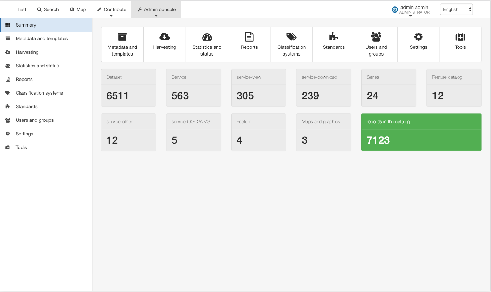
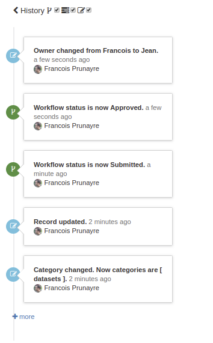
- Map viewer improvements (eg. projection switcher, better WFS2 support, TMS support, HTTPs redirect support, WPS support, external lviewer support, legend panel)
- Digital Object Identifier creation
- ISO19139 / DataCite output format
- Editor board / Permalink
- Editor / Inline validation
- Editor / Use thesaurus for any fields
- Thesaurus / Better Registry support and GEMET update to version 4.1.2
- Standard / Add API to reload configuration
- Formatter / Add support for JSON output
- Harvesting / Add support for WPS2
- Harvesting / WFS features improvements (eg. asynch indexing for better performances, precision model configuration, CDATA support, Elasticsearch 6.4.x support)
- Performance improvements on indexing and JS & LESS compilation
- Better HTTPs support
- Security fixes and library updates
and more ... see 3.6.0 issues and pull requests for full details.
3.4.x
Version 3.4.0
New features
- User interface configuration in the admin page and JS client API
- Multilingual support now available for thesaurus admin, subtemplates and URL. Improved ISO19139 indexing.
- Catalogue your maps easily
- Basket & user saved selection support
- Editor / Support for polygon encoding
- Editor / Better local XLink support
- Editor / Add a virtual all thesaurus to easily pick up keywords from all thesaurus
- Editor / Support for extent and format subtemplate
- Editor / Improved configuration (eg. sidepanel, embedded directive, ...)
- Subtemplate / Init extent subtemplate from shapefiles
- Subtemplate can now have a validation status
- Dashboards and statistics are now using Elasticsearch & Kibana
- WFS feature indexing using Elasticsearch
- Fix sitemap memory issue
- and lots of improvements in the user interface
Removed features
and more ... see 3.4.0 issues and pull requests for full details.
Version 3.4.1
New features
Removed features
and more ... see 3.4.1 issues and pull requests for full details.
Version 3.4.2
New features/fixes
- User feedback (https://github.com/geonetwork/core-geonetwork/pull/2419) and additional improvements (https://github.com/geonetwork/core-geonetwork/pull/2708, https://github.com/geonetwork/core-geonetwork/pull/2712, https://github.com/geonetwork/core-geonetwork/pull/2725)
- Editor / Topic category widget should look like keywords.
- Editor / INSPIRE JRC validation
- Editor / INSPIRE view improvements
- XSL processing / Preview mode / Return error report.
- ISO19139 / Improve feature catalogs in metadata
- Fixes to WFS indexing & filtering
- Map viewer / Allow to customize gazetteer
- Support MEF in LocalFilesystemHarvester
- Fix deadlock threads while indexing
and more ... see 3.4.2 issues and pull requests for full details.
Version 3.4.3
New features/fixes
- INSPIRE / INSPIRE / Add support to load codelists from Registry
- XSL processing / Formatter / Schema resources are not properly loaded
- XSL processing / Formatter / XSLT / Break work with some hardcoded rules
- Editor / Topic categories widget doesn't work with schemas based in iso19139
- Editor / ISO19110 / producer does not use directory.
- Harvesters / Harvesting wps2.0.0
- Oracle compatibility
- Avoid crawler to obtain a thread with a remanant context
and more ... see 3.4.3 issues and pull requests for full details.
Version 3.4.4
::: warning ::: title Warning :::
The migration from 3.4.3 and earlier to 3.4.4 may cause a reset of the Template for advanced search form setting in the UI configuration. :::
New features
- Added Slovak language (PR 3086)
- Improved error message when a region was not found in a thesaurus (PR 3069)
- Improved batch editor labels in english (PR 3000)
- Excluded servlet-related dependencies (PR 2287)
Fixes
- Fixed issue with multiselect directive in users administration (issue 3055)
- Fixed issue where a record with user feedbacks could not be deleted (issue 3122)
- Fixed publication date for registries (PR 3150)
- Fixed CSW response when inserting records (issue 3104)
- Fixed WFS layer support in simple view (issue 3116)
- Fixed
hideTimeInCalendaroption for editor layout (issue 3058) - Fixed an issue with MapServer password reset (issue 3140)
- Fixed thesaurus upload that would sometime give an unclear error (issue 3131)
- Fixed loading WMTS sometime failing in projections other than EPSG:3857 (issue 3124)
- Fixed an error related to thesaurus encoding when uploading from a registry
- Fixed an issue when adding WMS layers with an url ending with
?(issue 3088) - Fixed temporal extent rendering in the editor (PR 2868)
- Fixed an
OutOfMemoryErrorwhen listing groups using service admin.group.list (PR 3079) - Fixed issue with INSPIRE related fields being indexed when the thesaurus was not present (issue 2719)
- Fixed adding a layer to the map when the URL contained extra parameters like GetCapabilities (PR 2846)
- Fixed rendering of the menubar on small screens (issue 2934)
- Fixed favicon uploading (issue 2992)
and more ... see 3.4.4 issues and pull requests for full details.
3.2.x
Version 3.2.0
New requirements
- This release requires the use of Java 8, and is compatible with both Oracle JDK and Open JDK.
New features
- WFS feature indexing (see getfeature_harvester)
- A new REST API (beta) is available. The documentation is available http://localhost:8080/geonetwork/doc/api
- User feedback form
- Editor / Associated resources can be updated without the advanced view
- Editor / Filter contact directory with facets
- Editor / XML view provides code editing with syntax highlighting and more, ...
- Directories can be populated from catalog content
- Metadata import improved (import by URL, import multiple files at once, better error reports)
- GeoServer updated to version 2.9.0
- Added schema.org tags for better indexing by search engine
Removed features
- ExtJS user interface removed
- Z39.50 server removed (SRU support still available)
and more ... see 3.2.0 issues and pull requests for full details.
Version 3.2.1
This is a maintenance release with lots of bug fixed and some new features:
- Add multiple parallel selection support
- Add CORS header configuration
- Editor / User can configure table layout
- RDF / URI prefix can be customized and records URI resolves
- Processing / Add capability to preview process results
and more ... see 3.2.1 issues and pull requests for full details.
Version 3.2.2
This is a maintenance release with lots of bug fixed and some new features:
- CSRF token support
- Fixes for Oracle DB
- Harvester / Support for ArcSDE direct connection
- Remove duplicated postgres driver
- HTTP requests / connection not released
and more ... see 3.2.2 issues and pull requests for full details.
3.0.x
Version 3.0.0
Version 3.0.1
New features
- Map viewer provides now 3D mode using Cesiumjs
- Make your map in the visualization tools and save your maps in the catalog
- Spatial filter is now available on the minimap
- Browse catalog by INSPIRE themes and use the new INSPIRE icon set
- Resource status is clearly displayed in search results
- Record view better displays links to local file on the network and database tables
- Multiple bounding boxes are supported on bounding box map highlighter and record view
- Sitemap is paginated
Bug Fixes
- Fix map printing on Tomcat 8
- Metadata editor now properly compute extent from geographic keyword
- Properly upload thesaurus
and more ... see 3.0.1 issues and pull requests for full details.
Version 3.0.2
New features
- Search / Add hierarchical facet support
- Search / Add facet on source catalog and resolution
- Metadata view / Better navigation between datasets and maps
- Editor / Automatically enable workflow for records in a group
- Thesaurus / Update region thesaurus based on Natural Earth and Sea Vox
- Processing / Vacuum batch process help cleaning ISO19139 and Dublin Core records
- Harvester / Filesystem harvester can harvest subtemplates
- Administration / End of session notification (See user-session)
Bug Fixes
and more ... see 3.0.2 issues and pull requests for full details.
Version 3.0.3
New features
- Search / Better support of INSPIRE themes in multilingual metadata records
- Editor / Thesaurus broader/narrower/related concepts navigation (eg. GEMET)
- Editor / Metadata identifier templates
- CSW / Improved interoperability with other implementations
- CSW / Pluggable output schema (required for ISO19115-3 support)
- Administration / Define default and a set of category per group
- Administration / Lock user account
Bug Fixes
and more ... see 3.0.3 issues and pull requests for full details.
Version 3.0.4
New features
- DCAT enhancements: CSW/OAI-PMH dcat outputs.
- Allow user to change its user details and password.
- Allows to set all datadir paths (not only geonetwork.dir) via overrides and bean properties.
Bug Fixes
- Geopublisher fixes.
- Privileges / RegisteredUser in group A MUST not be able to edit records.
- Saving a metadata with an empty keyword value creates invalid metadata.
and more ... see 3.0.4 issues and pull requests for full details.
2.10.x
All development has ceased: